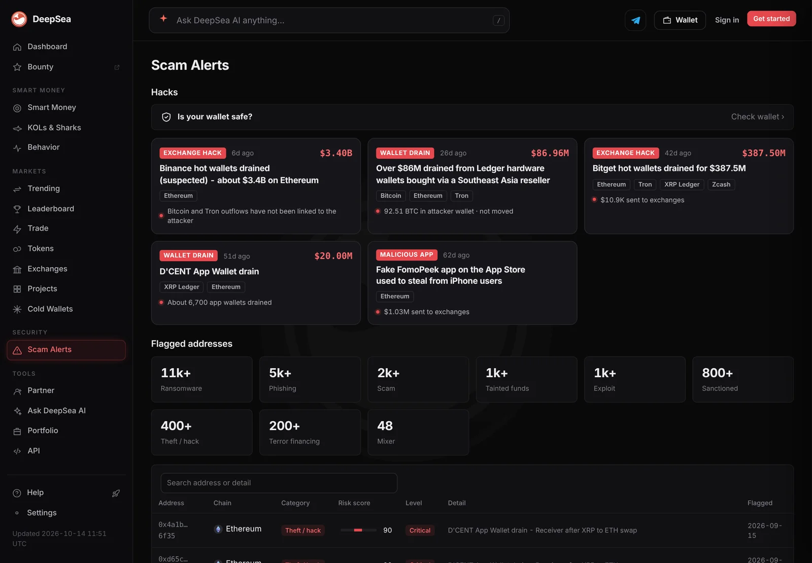
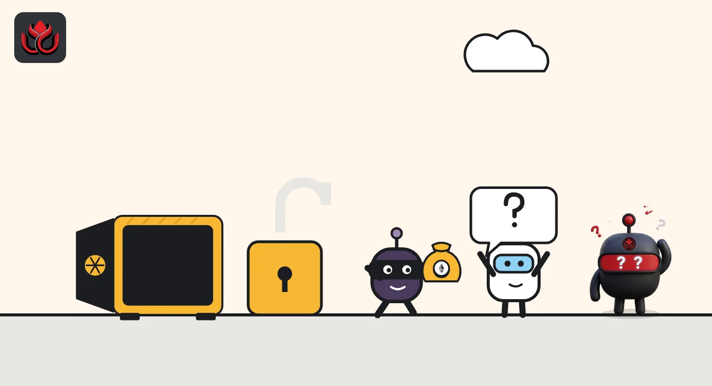
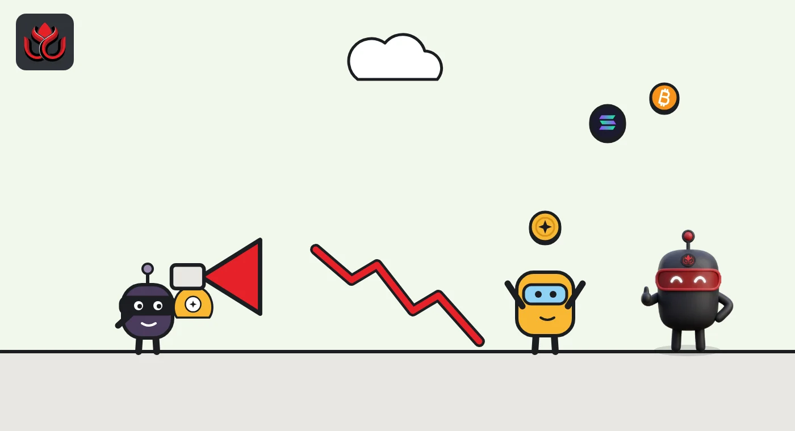

What is a rug pull? How crypto exit scams work and 6 warning signs to check
A rug pull is when a project's own insiders take buyers' money and walk away, by draining the pool, printing tokens through a backdoor or dumping their supply. Most of the warning signs are public on-chain before you buy.
Key points
- A rug pull is an exit scam by a project's insiders, not an outside hack. US prosecutors describe it as raising money and then abruptly abandoning the project.
- The three common forms: pulling the liquidity pool, a mint or freeze backdoor, and a soft rug where insiders sell into the hype.
- Check before you buy: where the LP tokens sit, whether mint and freeze authority are revoked, what the contract owner can do, and how much the top 10 wallets hold.
 What DeepSea's data shows
What DeepSea's data shows
Several warning signs in this guide can be checked on analytics sites. On November 2, DeepSea's Pulse page tagged trending tokens with flags such as the share held by the top 10 wallets, the share bought by bundled wallets, "Dev sold" when a creator wallet sold, and "Whales selling." One token on the list showed 95% of supply in its top 10 wallets; another showed 42% bought in bundles. A flag is a reason to look closer, not proof of a scam.
DeepSea's scam alerts page counted more than 2,000 addresses flagged as scams and more than 5,000 for phishing that day.

Data: DeepSea (desea.io), checked November 2, 2026, 1:01 p.m. ET.
What is a rug pull in crypto?
A rug pull is an exit scam. The name comes from pulling the rug out from under someone. In a March 24, 2022, release, the US Attorney's Office for the Southern District of New York described it as a case where the creator of a project solicits investments and then abruptly abandons it.
Rug pulls are common in new tokens because anyone can launch one in minutes, often with no team names, no audit and no lockup. Buyers usually find out only when the price goes to near zero or the token can no longer be sold.
A rug pull is different from a hack. In a hack, an outsider breaks in. In a rug pull, the people who control the project use powers they kept for themselves. It is also different from a wallet drainer, which tricks you into signing away tokens you already own.
How does a liquidity pull work?
Most new tokens trade on a decentralized exchange pool that pairs the token with something valuable, such as ETH, SOL or a stablecoin. Whoever adds that pair receives liquidity tokens (LP tokens). Ethereum's walkthrough of Uniswap v2 explains that these represent a share of the pool, and that burning them returns the underlying tokens.
That is the weak point. If the creator still holds the LP tokens, they can withdraw the valuable side of the pool at any time. Holders are left with a token and nothing to sell it into.
An SEC case shows how this is done. In January 2025 the SEC alleged that the founders of a token called Game Coin (GME) told investors on social media that liquidity was "locked," while certain LP tokens went to an address controlled by a blockchain engineer hired to code for the project. The SEC alleged the engineer kept them unlocked, used them to withdraw liquidity, took crypto worth about $553,000 and caused the price to drop about 12%. He agreed to settle without admitting or denying the allegations, subject to court approval.

What is a mint or freeze backdoor?
Some rugs are written into the token itself.
- Mint authority. On Solana, every token has a mint account. Solana's documentation says the mint authority is the account allowed to create new units and increase supply. If it is still active, the holder can print new tokens and sell them into the pool. Setting it to none, the Set Authority docs say, permanently removes the role.
- Freeze authority. Solana's freeze docs explain that a frozen account cannot receive, transfer or burn tokens until it is thawed. Stablecoin issuers use this for compliance, but in an anonymous memecoin it can stop buyers from selling.
- Owner functions on Ethereum. Many ERC-20 tokens use an owner role. OpenZeppelin's widely used Ownable contract lets the owner call functions nobody else can; after ownership is renounced, those functions can no longer be called. Whether those functions include minting, fees or blocklists depends on the code.
What is a soft rug?
A soft rug leaves the code alone. Insiders hold a large share of supply, promote the token, then sell steadily or all at once. Nothing is technically broken, which makes it harder to prove.
It looks a lot like the pump-and-dump schemes the SEC's investor education office warned about in May 2024: promoters hype a token, including memecoins sold as "pre-sales" on social media, sell before the hype ends, and leave later buyers with large losses. The office advises against investing based only on social media or app information.
Supply data tells you how big this risk is. LC Insight's guide to FDV versus market cap explains how to see how much supply is still to come.

What are the warning signs of a rug pull?
None of these proves a scam, and a token can pass every check and still fail. But each one shows a power someone kept.
- Holder concentration. On a block explorer's holders tab, check how much the top 10 wallets hold, leaving out pools and known exchange wallets. Bundled wallets that bought in the same block can hide one owner behind many addresses. LC Insight's piece on DeepSea's risk flags shows how this looks in practice.
- Unlocked liquidity. Look for where the LP tokens are. If they sit in an ordinary wallet, they can be withdrawn. Burned or time-locked LP tokens lower this risk only if you can confirm it on-chain, not on a website.
- Live mint or freeze authority. Solana explorers show both on the token page. "None" or "revoked" is what you want for a memecoin.
- Owner powers. On Ethereum-style chains, check whether the contract is verified, who the owner is, and whether it can mint, change fees or block addresses.
- Can you sell? A token where buys go through but sells fail or carry huge taxes is often called a honeypot.
- Social pressure. The SEC office lists pressure from fear of missing out and guaranteed large returns among red flags.
Do people get charged for rug pulls?
Sometimes. In the 2022 case above, prosecutors in New York charged two defendants over an NFT project called Frosties, alleging about $1.1 million in proceeds moved to wallets they controlled. Each faced wire fraud conspiracy and money laundering conspiracy counts. Prosecutors said the pair was promoting a second project, Embers, which the government believed was another fraud, and which was expected to raise about $1.5 million. These were allegations at the time of the release.
In the SEC's Game Coin case, the engineer agreed to pay $672,992 in disgorgement and interest plus a $150,000 civil penalty. Charges like these are rare next to the number of tokens that collapse, and money is seldom fully recovered.
Amounts in two official rug pull cases
US$ thousand
Sources: US Attorney's Office, SDNY; SEC Litigation Release No. 26223.
What should you do if you were rug pulled?
Write down the token contract address, the pool, your transaction hashes and any promises made in posts or chats, with dates, and report the case to your local police and financial regulator. Blockchain records are permanent, so the evidence will not disappear. Be wary of anyone who contacts you offering to recover the money for a fee: the SEC office lists requests for more money to recover earlier losses as a red flag.
LC Insight analysis
This section is our reading of the facts above, not a statement of fact.
- We think the most useful habit is checking powers, not promises. Mint authority, freeze authority, LP token location and contract ownership are all public, and each takes under a minute to read on an explorer.
- The soft rug is the hardest to spot and the hardest to prosecute. When insiders hold most of the supply, the code can be clean and the outcome the same.
- Enforcement is real but thin. Charges are rare next to the number of tokens that fail, so most victims should not count on getting money back.
What's next
- Launchpads and DEXs that require revoked mint authority or locked liquidity by default
- More SEC and DOJ cases using the words "locked liquidity" or "rug pull"
- Wallets that warn on live freeze or mint authority before a swap
Frequently asked questions
Is a rug pull illegal?
It can be. US prosecutors have charged NFT rug pulls as wire fraud, and the SEC has brought a securities case where liquidity promoted as locked was withdrawn. Whether a given collapse is a crime depends on the facts.
Does locked liquidity mean a token is safe?
No. It removes one way to rug. A mint authority, owner powers or insiders holding most of the supply can still hurt holders, and the SEC case shows a lock claim must be checked on-chain.
What does revoked mint authority mean on Solana?
It means nobody can create new units of that token. Solana's docs say setting an authority to none removes that role permanently.
Is a rug pull the same as a wallet drainer?
No. A rug pull is done by a project's insiders. A drainer is a scam that tricks you into signing an approval that lets an attacker move your own tokens.
Disclaimer. This article is based on public information and the sources listed below as of the update time shown. It is for information only and is not investment, legal or tax advice. Figures may change as companies and authorities publish new data.
Sources
- US Attorney's Office, SDNY, Two defendants charged in NFT fraud and money laundering scheme (March 24, 2022)
- SEC, Litigation Release No. 26223 (January 2025)
- SEC Office of Investor Education and Advocacy, Investor Alert on crypto scams (May 29, 2024)
- Solana docs, Tokens on Solana
- Solana docs, Set Authority and Freeze Account
- OpenZeppelin Contracts docs, Access control (Ownable)
- ethereum.org, Uniswap v2 contract walkthrough